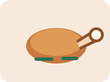
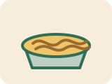

先执行2周，用体重周均值微调。
足量增肌，不把尿酸压力推太高。
保证胸背训练、游泳和恢复质量。
饱和脂肪尽量低于15-18g。
Daily meals
每日食谱主线
08:00
早餐
燕麦70g或全麦面包2片；低脂奶250ml；全蛋1个+蛋清2个；水果1份。
12:30
午餐
熟米饭250-300g；去皮鸡腿/鸡胸120-150g或豆腐250g；蔬菜300g；油8-10g。

16:30
训练前加餐
低脂酸奶200g或牛奶250ml；红薯150g、面包1-2片或香蕉1根。
20:00
晚餐
熟米饭250g或熟面250g；巴沙鱼150g熟重/去皮鸡腿120g熟重/豆腐250g；蔬菜300g。

Quick reference
常用食物换算
Weekly structure
每日训练计划


拉：背+二头
总时长45-60分钟。高位下拉3组x8-12次；坐姿划船3组x8-12次；单臂哑铃划船2组x10-12次/侧；哑铃弯举3组x10-15次；锤式弯举2组x10-15次；面拉2组x12-20次；小腿拉伸2组x45-60秒/侧。
推：胸+肩+三头
总时长45-55分钟。平板哑铃卧推3组x8-10次；上斜哑铃卧推3组x8-12次；俯卧撑或器械推胸2组，保留1-2次余力；哑铃肩推2-3组x8-12次；侧平举2-3组x12-20次；绳索下压2组x10-15次。
游泳+活动度
总时长30-45分钟。自由泳或仰泳20-30分钟，轻中等强度；腓肠肌拉伸3组x45秒/侧；比目鱼肌拉伸3组x45秒/侧；鸟狗或死虫2组x8-10次/侧。避免冲刺和抬头蛙泳。
腿+小腿
总时长45-60分钟。腿举或轻深蹲3组x8-12次；臀桥/臀推3组x8-12次；腿弯举3组x10-15次；站姿提踵3组x10-15次，底部停2秒；坐姿提踵2组x12-20次；胫骨前肌抬脚3组x15-25次；侧桥2-3组x20-40秒/侧。
上肢综合
总时长45-55分钟。高位下拉或辅助引体3组x8-12次；哑铃卧推或器械推胸3组x8-12次；胸托划船或坐姿划船3组x8-12次；绳索夹胸/哑铃飞鸟2组x12-15次；反握下拉2组x10-12次；二头弯举2组x10-15次。
恢复
任选一天轻松游泳30-40分钟或快走30-45分钟；另一日完全休息。小腿拉伸8-10分钟。睡眠优先，腰背状态优先。
执行规则
每次训练先热身8-10分钟。复合动作休息2-3分钟，孤立动作休息60-90秒。每组保留1-3次余力，不要每组都做到力竭。动作疼痛超过3/10、腿麻或放射痛时停止。
Ready to log
每天打开一次，记录实际完成情况
Form library
动作学习视频
哑铃卧推
重点看肩胛稳定、手肘角度、下放控制。
Scott Herman: Dumbbell Bench Press高位下拉
重点看不要耸肩、不要后仰借力、用肘向下拉。
Scott Herman: Lat Pulldown坐姿绳索划船
重点看胸椎挺住、肩胛后收、腰椎不来回晃。
Scott Herman: Seated Cable Low Row哑铃弯举
重点看肘部固定、身体不摆动、离心慢放。
Scott Herman: Alternating Dumbbell Curl锤式弯举
适合补手臂厚度，重点是中立握和全程控制。
Scott Herman: Hammer Curl腿举
腰椎友好版本重点：臀部贴垫，底部不要骨盆后卷。
NASM: Leg Press臀桥
用臀发力，不要用腰顶；适合作为硬拉替代动作之一。
Scott Herman: Glute Bridge提踵
底部停顿、顶部收缩，不要弹震借力。
Mayo Clinic: Calf RaiseMcGill Big 3
改良卷腹、侧桥、鸟狗。腰突人群优先学这一组。
Squat University: McGill Big 3自由泳技术
重点看头位、身体线条、换气时不要抬头塌腰。
USMS: Freestyle Guide仰泳技术
适合作为腰椎友好有氧选项，先轻松游，不追求速度。
USMS: Backstroke Guide